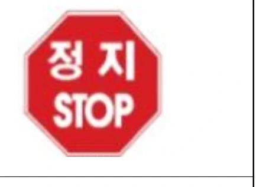

899. Which of the following is the correct method of driving on a road with this safety sign?

- ①You can stop only when there is an oncoming car.
- ②You must stop even when there are no cars on the road.
- ③Stop only when children cross the street.
- ④Stop only when there is a red light.
Show answer
Answer
② You must stop even when there are no cars on the road.
Reference
Road Traffic Act Enforcement Rules [Appendix 6] Regulatory sign 227, a temporary stop sign, installed on the right side of intersections and other necessary points where vehicles must temporarily stop.
Reference text is a machine translation for study.